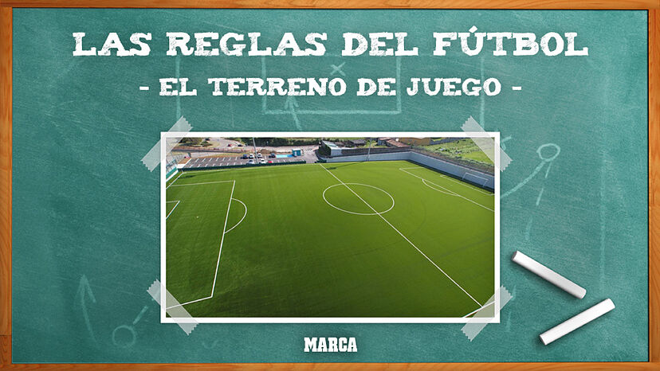
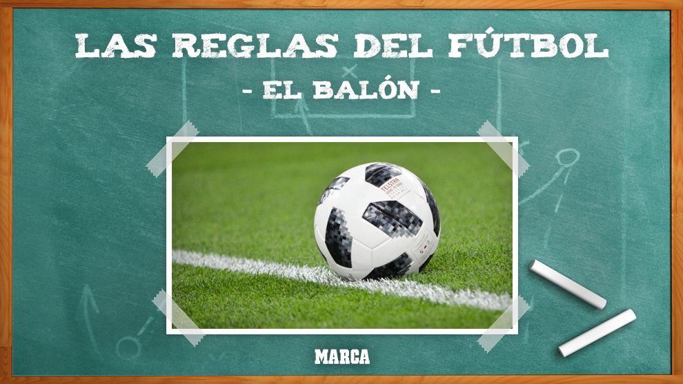
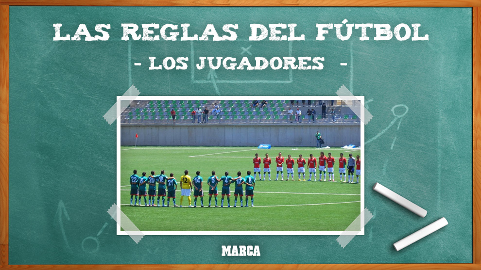
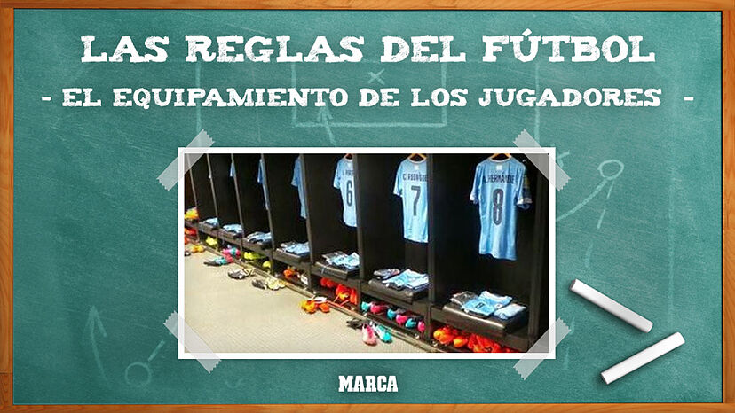
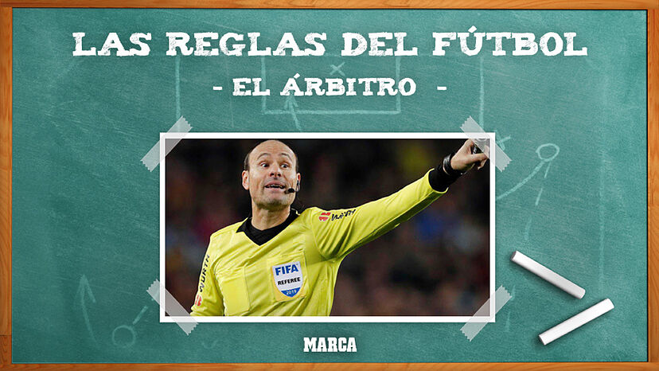
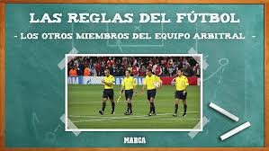

1.- Dimensiones. El Campo de juego será un rectángulo de una longitud no mayor de 120 metros. ni menor de 95 metros y una anchura no mayor de 90 metros ni menor de 45 metros. En todos los casos el terreno de juego deberá ser rectangular.
2.- Modo de marcarlo. El campo de juego será marcado de acuerdo al plano con líneas visibles, las cuales serán de un ancho no mayor de 8 cm ni menor de 5 cm; las líneas más largas serán llamadas líneas de banda y las más cortas de meta. En el centro del campo se trazará una línea medianera a través del ancho del campo, de banda a banda. El centro del campo será marcado con un punto, alrededor del cual se trazará una circunferencia de 2 m de radio.
3.- - Área penal. En cada extremidad del campo, a 8 m de distancia de la línea de gol y paralela a esta, se trazará una línea de banda a banda con la cual quedara formada el “área de gol y penal”. En el centro de la línea se marcara un punto, que será el punto del puntapié del penal.
4.- Área del guardameta. En cada uno de los extremos del campo, y tomando como referencia el centro de la línea de meta, se trazará un semicírculo que se denomina “Área del guardameta” y que tendrá 2,50 m de circunferencia que serán medidas dentro del centro del arco. Esta línea es un área de defensa para el guardameta, así que en el saque de esquina está prohibido el ingreso de los jugadores contrarios a esta área y por lo tanto se prohíbe un saque de esquina dentro de ella.
5.- Los Marcos. En el centro de cada línea de meta se colocaran los marcos, que estarán formados por dos postes verticales, separados de una distancia de 3 m entre sí y unidos en su extremos por un larguero horizontal cuyo borde inferior estará a 2 m del suelo; el ancho y grueso de los largueros no podrá exceder de los 8 cm ni menos de 5 cm, para el buen desarrollo del partido deberán ponerse redes a los postes.
6.- Área de esquina. Con un radio de un metro, medido desde cada esquina se marcarán cuatro arcos de circunferencia, las cuales servirán para que el jugador que ejecute el saque de esquina, al hacerlo deberá estar parado dentro de ella, y la ejecución debe hacerse al igual del saque de banda. Como la regla dice: que el saque de esquina debe ser al igual que el saque de banda, esto indica que el jugador que incurra en el mal saque, se anule este y se otorgue un saque de banda al bando contrario del que vulneró la regla.
